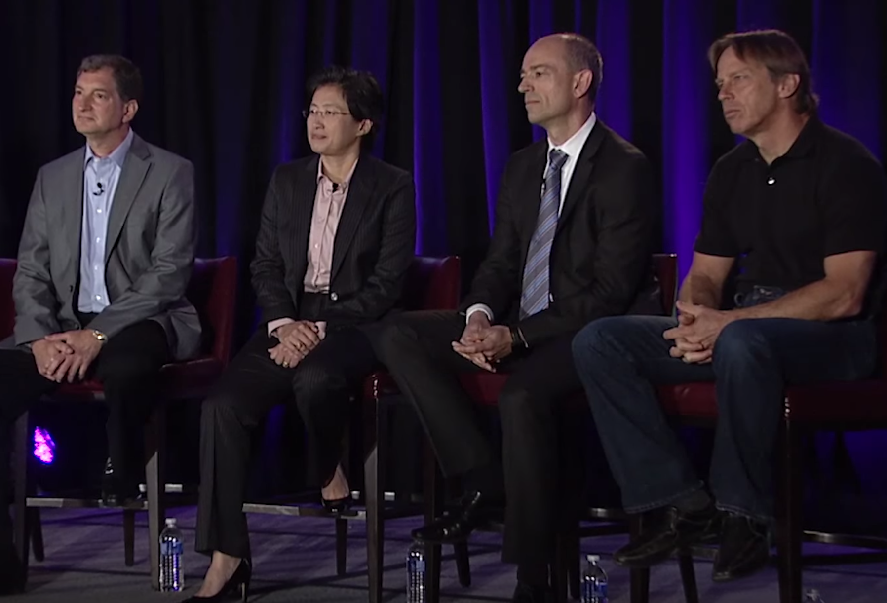

Initial Reception
The first Ryzen 7 (1700, 1700X, and 1800X) processors debuted in early March 2017 and were generally well received by hardware reviewers. Ryzen was the first brand new architecture from AMD in five years, and without very much initial fine-tuning or optimization, it ran generally well for reviewers. Initial Ryzen chips ran well with software and games already on the market, performing exceptionally well in workstation scenarios, and well in most gaming scenarios. Compared to Piledriver-powered FX chips, Zen-powered Ryzen chips ran cooler, much faster, and used less power. IPC uplift was eventually gauged to be 52% higher than Excavator, which was two full generations ahead of the architecture still being used in AMD's FX-series desktop predecessors like the FX-8350 and FX-8370. Though Zen fell short of Intel's Kaby Lake in terms of IPC, and therefore single-threaded throughput, it compensated by offering more cores to applications that can use them. Power consumption and heat were found to be highly competitive with Intel, and the included Wraith coolers were generally competitive with higher-priced aftermarket solutions.
Ryzen 1800X's multi-threaded performance, in some cases while using Blender or other open-source software, was around four times the performance of the FX-8370, or nearly double that of the i7 7700K. One reviewer found that Ryzen chips would typically outperform competing Intel i7 processors for a fraction of the price when all eight cores were utilized.
One complaint among a subset of reviewers, however, was that Ryzen processors fell behind their Intel counterparts when running older games, or running certain newer games at mainstream resolutions such as 720p or 1080p. AMD acknowledged the gaming performance deficit at low resolutions during a Reddit "Ask Me Anything" thread, where it explained that updates and patches were being developed. Subsequent updates to Ashes of the Singularity: Escalation and Rise of the Tomb Raider increased frame rates by 17 to 31% on Ryzen systems. Publisher id Software announced in April 2017 it would optimize its future games to make use of the greater parallelism available on Ryzen CPUs.
It has been suggested that low threaded applications often result in Ryzen processors being underutilized, producing lower than expected benchmark scores, due to the fact that Zen relies on its core count to make up for its lower IPC rating than that of Kaby Lake. However, AMD and others have argued thread scheduling is not the fundamental issue to Windows 10 performance. Early AM4 motherboards were also hindered by BIOS bugs and poor DDR4 memory support.